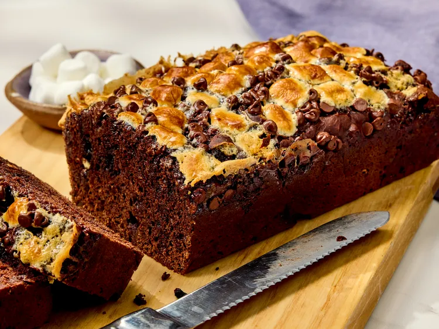
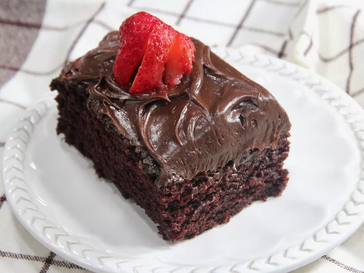

Soups
Butternut Squash Soup

Ginger, rosemary, and sage fill this
soup with cozy autumn flavor.
Lightly creamy, warming, and
nourishing, it’s my go-to recipe
for a cool fall night.
Potato Leek Soup
If you see a bunch of beautiful fall leeks at the
farmers market or store, snatch them up to make
this recipe. It’s creamy, rich, and flavorful,
filled with the delicate, oniony leeks, buttery
potatoes, garlic, and thyme.
Desserts
Rocky Road Loaf Cake
This 5-ingredient rocky road loaf cake could not be any
easier—using melted ice cream as the base sounds crazy
but when you think about it, ice cream has all the ingredients
you’d need for a cake: eggs, sugar, and milk or cream. A little
extra cocoa mixed into the batter ensures a deeply rich chocolate
flavor and color, while marshmallows and chocolate chips, both
folded into the batter and sprinkled over top, really drive home
the ‘rocky road’ flavor.
Wacky Cake
Wacky cake isn't the only dessert that was created
during the Great Depression, but it is one of the
most memorable. These treats were made with minimal
ingredients and omitted milk, eggs, butter, or even
all three.